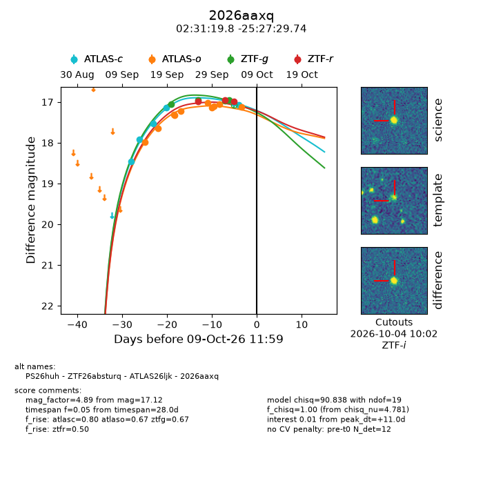
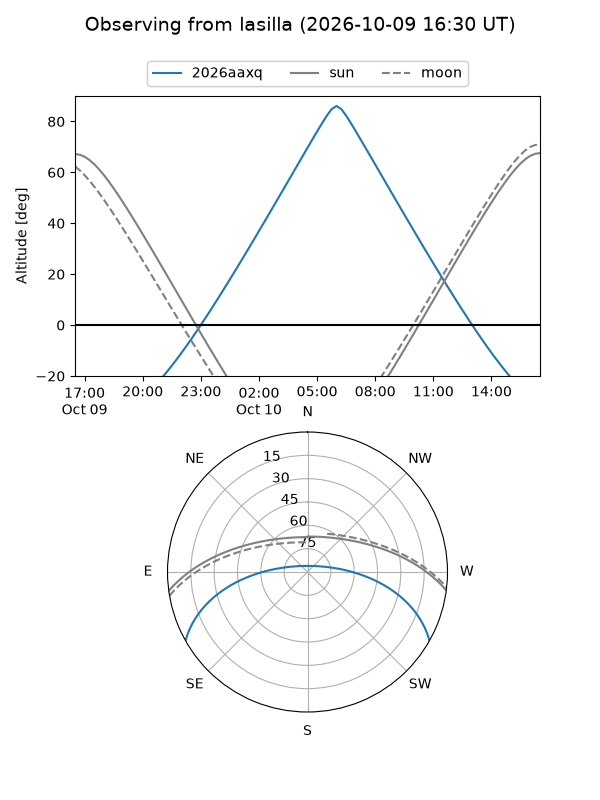
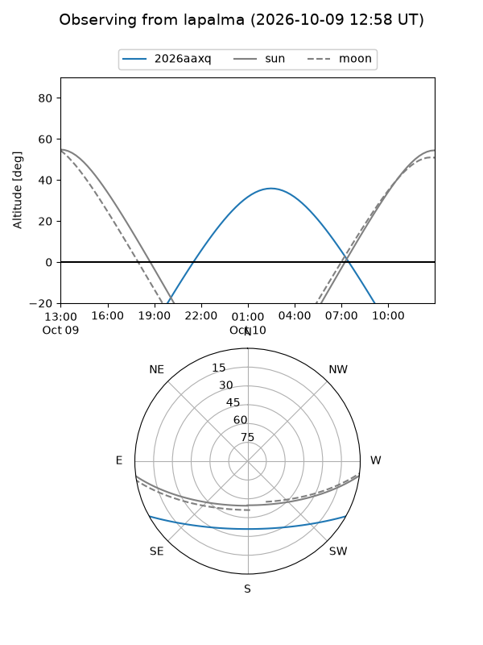
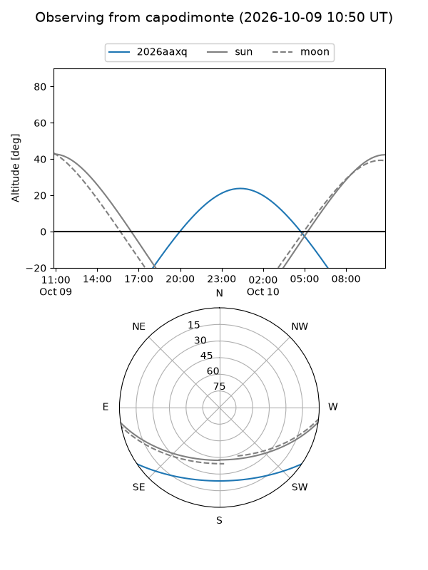
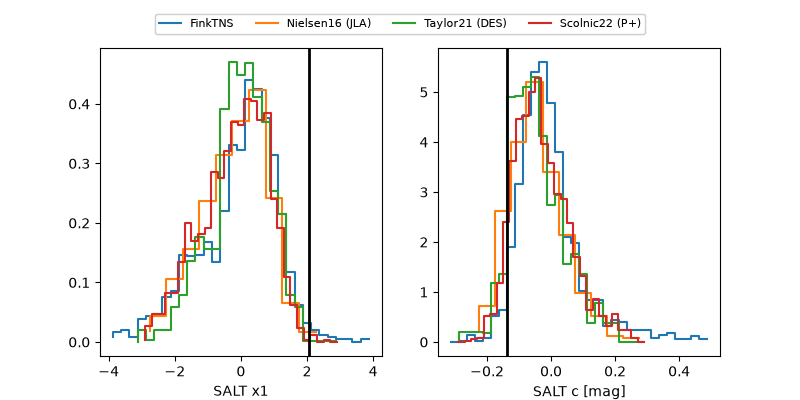

2026aaxq
Target 2026aaxq at 2026-10-09 12:01
Aliases and brokers:
FINK-ZTF: ztf.fink-portal.org/ZTF26absturq
Lasair-ZTF: lasair-ztf.lsst.ac.uk/objects/ZTF26absturq
ALeRCE-ZTF: alerce.online/object/ZTF26absturq
YSE-PZ: ziggy.ucolick.org/yse/transient_detail/2026aaxq
TNS name: wis-tns.org/object/2026aaxq
Direct TNS query: direct search
alt names
ZTF26absturq (ztf,fink_ztf)
2026aaxq (tns,yse)
ATLAS26ljk (atlas)
PS26huh (panstarrs)
Coordinates:
equatorial (ra, dec) = 37.8326,-25.45826
equatorial (HMS+DMS) = 02:31:19.83,-25:27:29.74
galactic (l, b) = (214.3369,-67.58501)
Flags:
peak dt: +11.0
Photometry:
last atlasc=17.07, atlaso=17.12, ztfg=16.96, ztfr=16.99
6 atlasc, 10 atlaso, 4 ztfg, 3 ztfr detections
Lightcurve

Visibility



Additional plots
